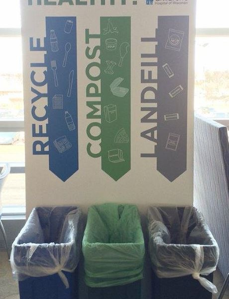

March 28, 2016
Composting Part 2: Even the Big Boys are Doing It

Keeping food out of the landfill, and recycling food waste, is not just for back yard scrappers. Restaurants and big institutions are getting into it too. Finley’s cousin Girard gets his exercise once a week by bicycling to Madison, WI restaurants to pick up their kitchen scraps and take them to a community garden for composting.
Finley’s uncle, Marc, has taken it up a notch by initiating a composting program at the Children’s Hospital of Wisconsin, which he describes in his blog post. Because this is “professional” composting, they are able to include food scraps and paper goods that many of us would shy away from at home. What he doesn’t mention in his blog is that this composting program is projected to save the hospital money – what some people would call “doing well while doing good.”
What’s happening at your place of employment, or the restaurants where you eat? Maybe it’s time to encourage a little change? Even the simple act of asking can get the wheels turning.
{kind=link}